Clifford deformed codes tailored to quantum dot noise
Marcos Jiménez
## Objetivo general Cuantificar el desempeño de un código de Bacon-Shor con deformaciones de Clifford en el contexto de una plataforma de puntos cuánticos para * ampliar el repertorio de posibles códigos de corrección cuántica de errores apropiados a cúbits de espín en puntos cuánticos y * guiar experimentos futuros.
## Objetivo 1 Simular el código de superficie tradicional (de tipo CSS) y el código de Bacon-Shor tradicional (de tipo CSS) bajo ruido despolarizador (simétrico, no sesgado) a nivel de circuito. Esto se hará como un "chequeo de sanidad" para reproducir resultados previos de la literatura. Esto se hara para códigos de distancia d = 3, 5, 7, 9. Se cuantificarán dos resultados: * Tasa de error lógico (tasa de fallo) después de una ronda de corrección de errores, en función de p * Decaimiento de la fidelidad lógica en función del número de rondas de corrección de errores.
### Rotated surface code memory Z <div class="image-row"> <p>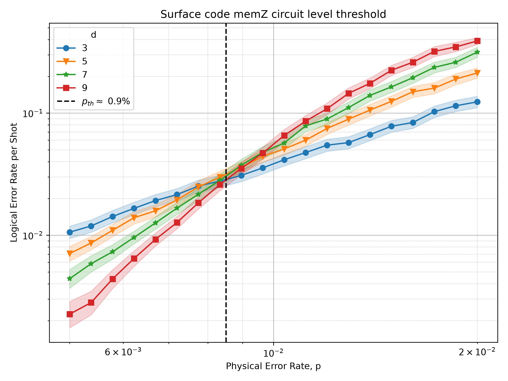</p> <p>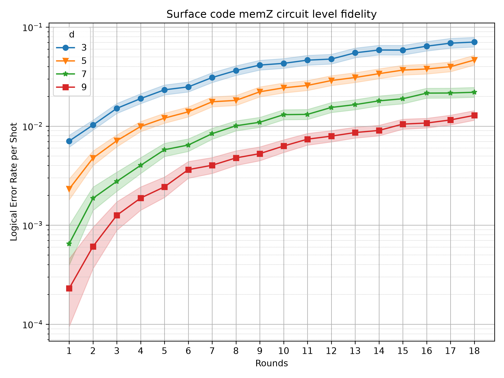</p> </div>
### Rotated surface code memory X <div class="image-row"> <p>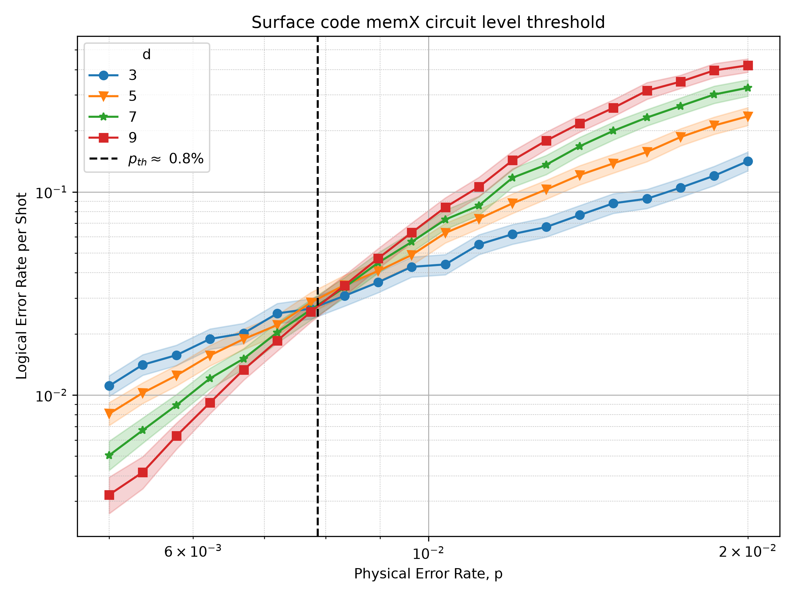</p> <p>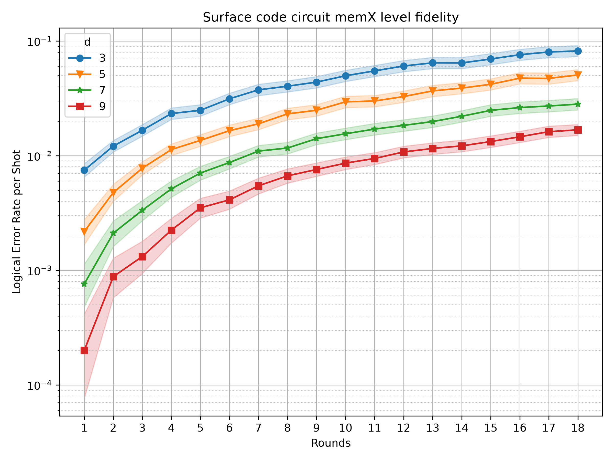</p> </div>
### Bacon-Shor code memory Z <div class="image-row"> <p>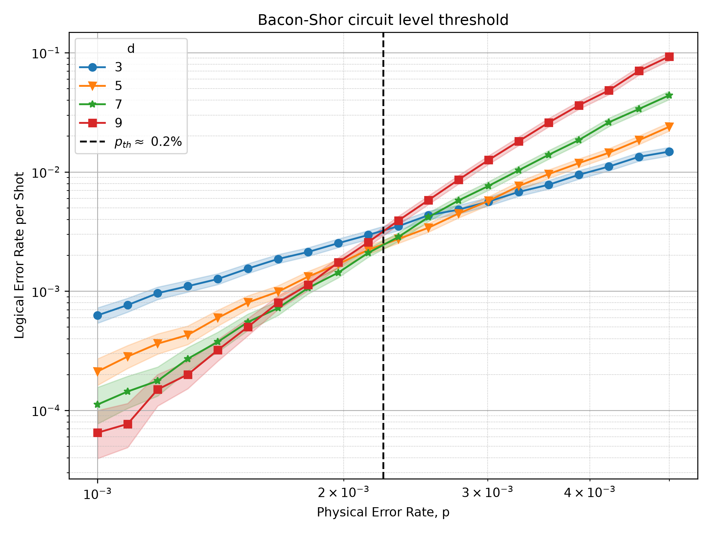</p> <p>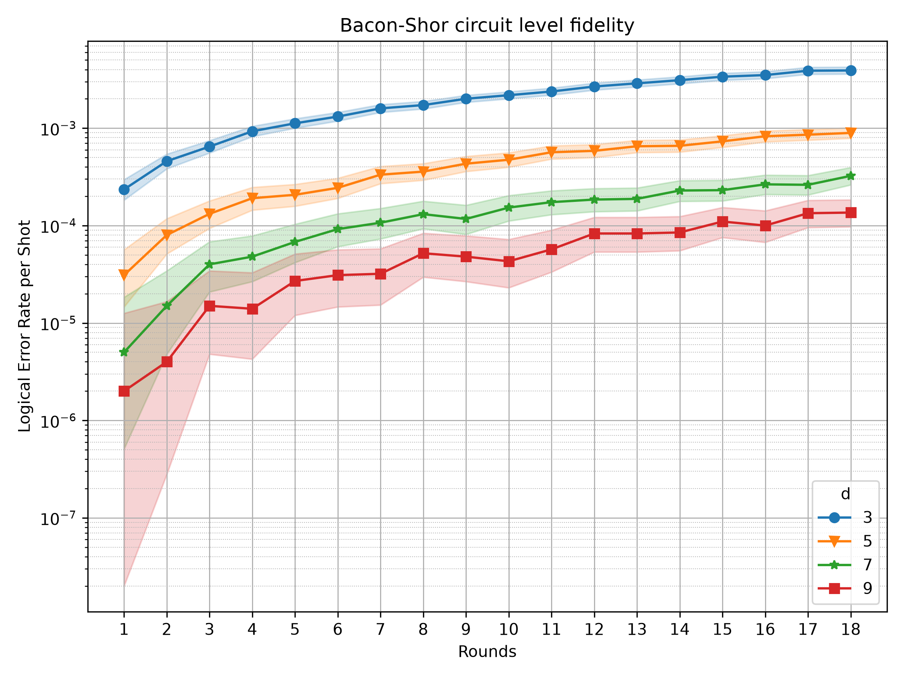</p> </div>
## Objetivo 2 Simular el código de superficie XZZX con ruido a nivel de capacidad de código (code capacity; corrección perfecta) bajo varios valores de sesgo. Esto también corresponde a un "chequeo de sanidad". Se cuantificarán dos resultados: * Tasa de error lógico (tasa de fallo) * Umbral en función del sesgo.
### XZZX code memory Z <div class="image-row"> <p>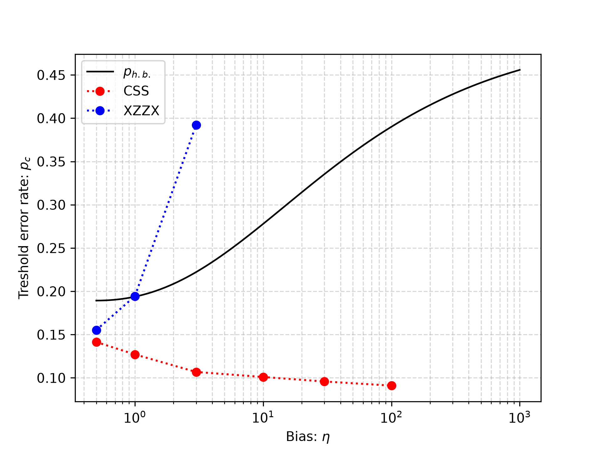</p> </div>
### XZZX code memory X <div class="image-row"> <p>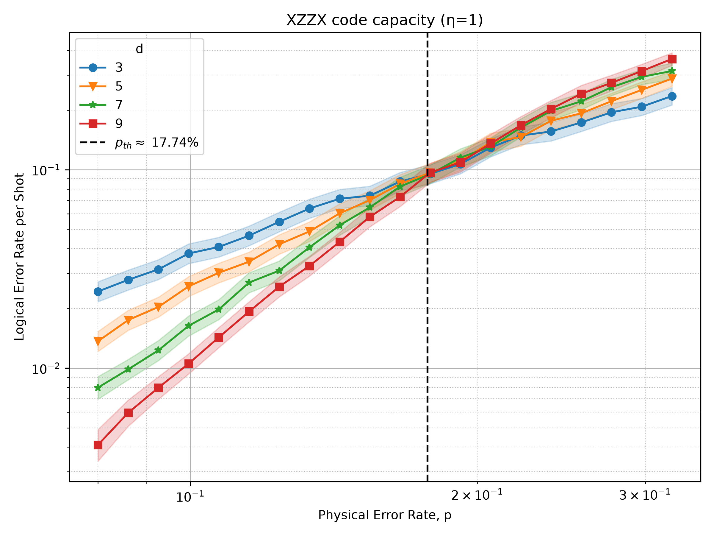</p> <p>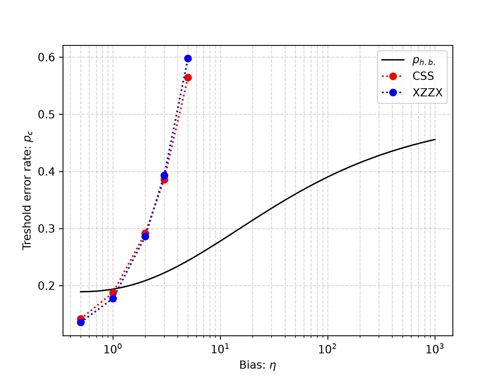</p> </div>
## Objetivo 3 Simular el código de Bacon-Shor XZZX con ruido a nivel de capacidad de código (code capacity; corrección perfecta) bajo varios valores de sesgo. Estos resultados no han sido reportados en la literatura. Se cuantificarán dos resultados: * Tasa de error lógico (tasa de fallo) * Umbral en función del sesgo.
### Bacon-Shor XZZX code memory Z <div class="image-row"> <p>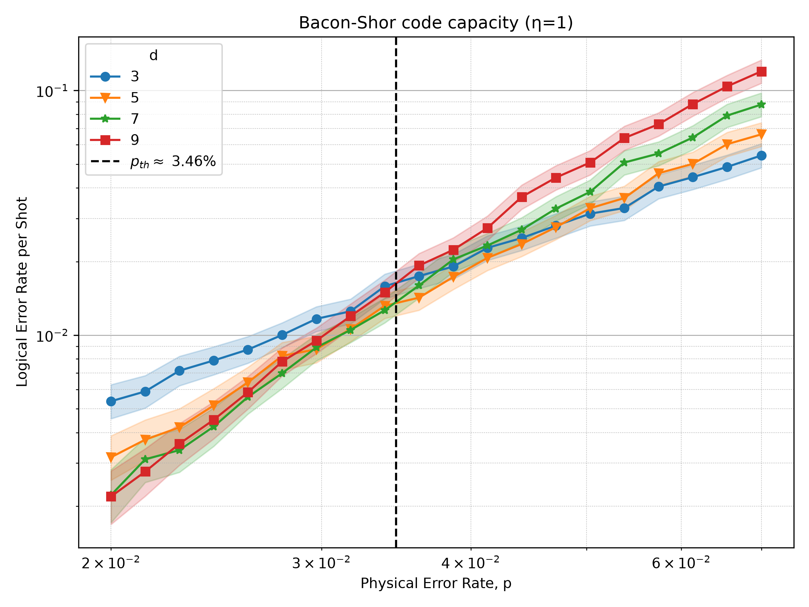</p> <img src="img/xzx_eta.png"> </div>
## Objetivo 4 Simular el código de superficie XZZX con el modelo de ruido puntos cuánticos a nivel de circuito . Se tomarán los parámetros de ruido del estado del arte de los cúbits de spin en puntos cuánticos y se adaptarán al simulador Stim. Esto se hará para códigos de superficie de distancia d = 3, 5, 7, 9. Estos resultados no han sido reportados en la literatura. Se cuantificarán dos resultados: * Tasa de error lógico (tasa de fallo) después de una ronda de corrección de errores, en función de p * Decaimiento de la fidelidad lógica en función del número de rondas de corrección de errores.
### XZZX code memory Z <div class="image-row"> <img src="img/xz_qd_th.png"> <p>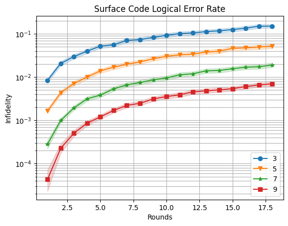</p> </div>
### XZZX code memory X <div class="image-row"> <img src="img/xz_qd_th.png"> </div>
## Objetivo 5 Simular el código de Bacon-Shor XZZX con el modelo de ruido puntos cuánticos a nivel de circuito . Se tomarán los parámetros de ruido del estado del arte de los cúbits de spin en puntos cuánticos y se adaptarán al simulador Stim. Esto se hará para códigos de superficie de distancia d = 3, 5, 7, 9. Estos resultados no han sido reportados en la literatura. Se cuantificarán dos resultados: * Tasa de error lógico (tasa de fallo) después de una ronda de corrección de errores, en función de p * Decaimiento de la fidelidad lógica en función del número de rondas de corrección de errores.
### Bacon-Shor XZZX code memory Z <div class="image-row"> <img src="img/bs_qd_th.png"> <img src="img/bs_qd_fi.png"> </div>